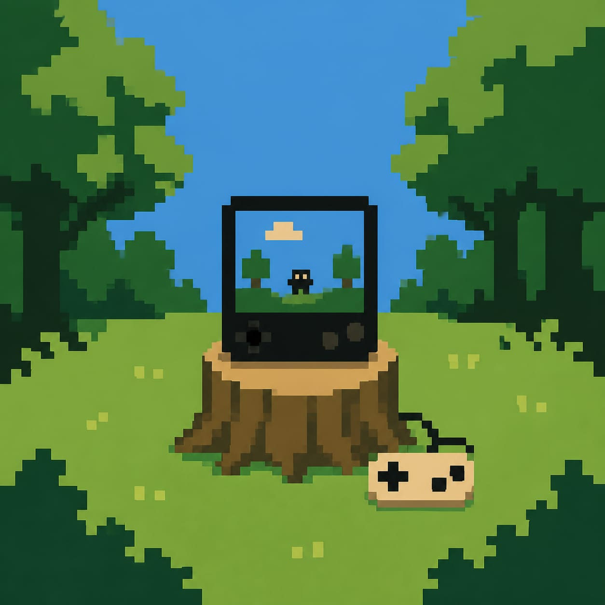

Orbital Oddity 11
Adds more frequent asteroid strikes, short-range volcano rock bursts, Enter-key menu activation, and occasional background comets.
Play
Explore fun games and activities here.
Adds more frequent asteroid strikes, short-range volcano rock bursts, Enter-key menu activation, and occasional background comets.
PlayAdds pause-frozen satellites, level-matched satellite counts, asteroid impacts with explosions and 2 HP damage, volcano rock spills, and fewer heart pickups.
PlayAdds level-varying music, procedural planet palettes, safer rings/auroras, more visible super volcanoes, red heart HP pickups, and a brief level-start pause menu.
PlayAdds level-based planets with a level HUD, changing planet/grass colors, craters, extra satellites and obstacles per level, plus rings, auroras, and super volcano worlds.
PlayAdds an orbiting satellite hazard with visible solar panels and orbit ring; colliding with it damages the player.
PlayRestores grass to flatter curved oval patches, makes the visible sun much brighter and white, and increases player HP to 5.
PlayAdds HP and game-over explosions, sad failure music, quieter collision audio, a brighter white sun, and grass patches curved to the planet surface.
PlayAdds a visible sun matching the light direction, procedural rocks/mountains/volcanoes with collision, and a success fanfare for completed orbits.
PlayBrighter twinkling starfields, menu and pause music, and mouse camera orbit controls around the player.
PlayStabilized rover orientation so its bottom stays toward the planet, with brighter stars, adaptive music, P-to-pause, and a restart button in the pause menu.
PlayInitial spherical-planet prototype with center gravity, surface movement, and collectibles scattered around the planet.
PlayFixes mobile custom ship preview framing, adds slithering exhaust trails, and introduces level 10+ invincible/breaker power-up buffs with aura, timers, and special music.
PlayAdds fading rear exhaust lines while flying and lets players continue a saved level directly from the game-over screen.
PlayAdds a start-menu player model selector with the classic rover and a custom GLB ship preview/model option.
PlayKeeps checkpoints after game over, makes tilt controls faster, adds surface contact shadows, and introduces 0-5 orbiting moons that can create solar eclipses.
PlayFixes mobile unpause, improves share text with game link and screenshot-file sharing where supported, changes controls to car-style steering, and adds experimental tilt controls.
PlayFixes leaderboard name input, shows leaderboard on the start screen, caps decorative grass/crater clutter, and scales satellites/asteroid bursts with level.
PlayMoves the pause button below the HUD, adds a local leaderboard with run screenshots, share support, and a console developer jump-to-level tool.
PlayAdds cleaner pause visibility, touch-control side settings, localStorage checkpoint arches every five levels with Game saved feedback, and per-obstacle HP cooldowns.
PlayMobile-friendly spin-off based on Orbital Oddity 11 with responsive phone viewport support, touch joystick movement, right-side camera drag, and a touch pause button.
PlayPlanet-whale movement lets the rover orbit all around the whale with center gravity, procedural collectibles and colliding crystal-tree obstacles, plus louder adaptive music and sound effects.
PlayCurved whale-back movement with rover/collectibles following the surface, plus procedural music, urgent final countdown tempo, rover movement audio, and collection sounds.
PlayStandalone 3D collectible prototype: drive a moon rover across a sleeping cosmic whale and collect glowfruit before time runs out.
Play